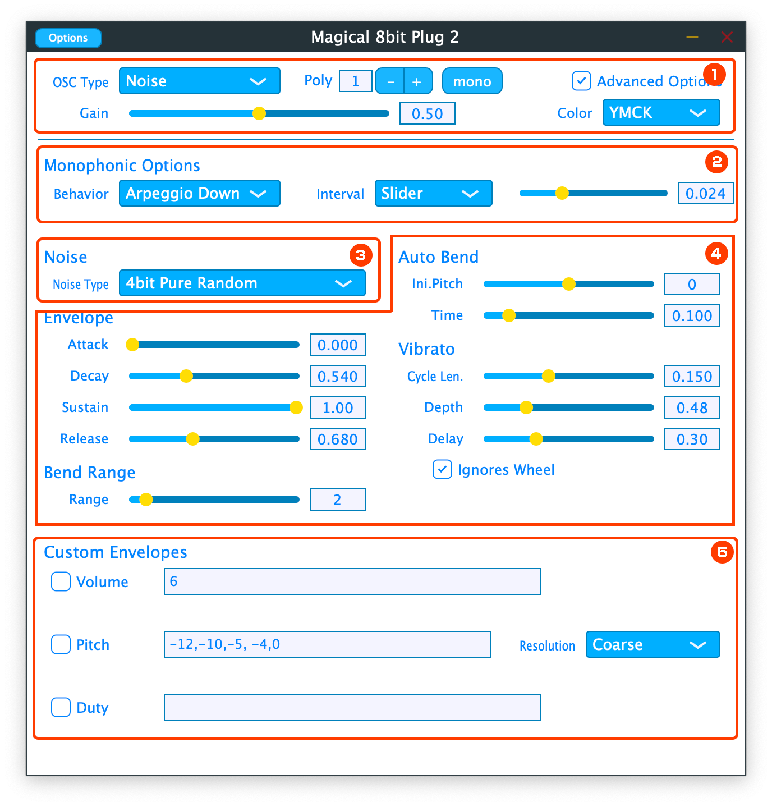
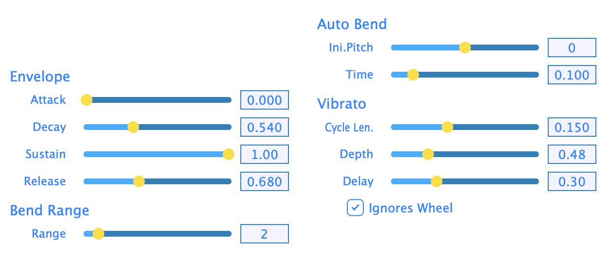
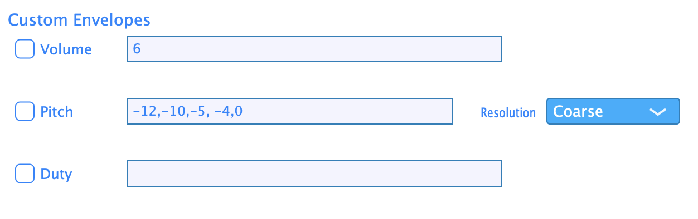

by Yokemura(YMCK) http://www.ymck.net/
What is Magical 8bit Plug?
Magical 8bit Plug is a software-synthesizer developed by Yokemura@YMCK which generates primitive electronic sounds like the old 8bit game consoles. It can be used as a plug-in for the host applications that support Audio Units or VST.
Features
- Basic 8bit-style waveforms
- As the new waveforms, 1bit noise is introduced, which can emulate the sound of original 8bit console more accurately
- Envelope forming with so-called ADSR.
- Pitch bend capability with depth control
- Auto Bending(a.k.a Frequency Sweep) which is suitable for making sound effects and drum sound etc.
- Vibrato to enrich your musical expression
- Custom envelopes, which gives you more precise control over volume, pitch and pulse duty values.
Open source
Magical 8bit Plug 2 is an open source software, so you can modify or enhance the functionality as you want and contribute it to share your improvement. The GitHub repository is here.
If you want to support the development but are not familiar to coding you can contribute through a donation.
Differences from the previous version
In this version (Magical 8bit Plug 2) includes all the waveforms that the previous version(Magical 8bit Plug) has, namely, square, pulse, 8bit-specific pseudo triangle and low resolution noise. And on top of those more precisely emulated noise waveforms and more detailed controls over the sound are newly implemented.
This version is technically distinct from the previous one. You can't replace with the new version with your parameters remaining as it is, but you can install both and keep using them separately.
Installation
Basically put the plugin file to appropriate folder to start using. As the actual installation method will vary according to your system and host application, please refer to the instructions from them for the detail. If you have any questions please don't ask me but ask Google. I'm not going be your kindly technical assistant.
Here's the standard installation paths. The actual installation method may vary according to your environment. And again, please don't ask me about the installation because I don't know about your system.
| Mac | AudioUnits | .component | /Library/Audio/Plug-ins/Components |
| VST2 | .vst | /Library/Audio/Plug-ins/VST | |
| VST3 | .vst3 | /Library/Audio/Plug-ins/VST3 | |
| Windows | VST2 | .dll | C:¥Program Files¥VSTPlugins C:¥Program Files¥Steinberg¥VSTPlugins C:¥Program Files¥Common Files¥VST2 C:¥Program Files¥Common Files¥Steinberg¥VST2 |
| VST3 | .vst3 | C:¥Program Files¥Common Files¥VST3 |
About VST2 and VST3 : Steinberg, which defines the VST specifcation, now supports only their new format, VST3. But there might be some host applications which still don't fully comply to VST3 and don't work as expected. In that case try using VST2.
Usage
Magical 8bit Plug 2 has several sections in its UI. The sections may switch its contents or its visibility according to the parameter settings. If you don't see the parameter you want to touch check the parameters to make sure they are properly set.
- (1)General Section
- General settings, literally.
- (2)Monophonic Section
- Only appears in Monophonic Mode. You can set portamento and arpeggio in this section.
- (3)Oscillator Specific Section
- You can set the parameters for the oscillator which you have chosen. The contents vary according to the OSC Type value.
- (4)Amp And Pitch Section
- Parameters about amplitude and pitch.
- (5)Custom Envelopes Section
- Only appears when Advanced Options checkbox is on. You can set complex time variances of pitch, volume and duty with simple text commands.
General Section
| Pulse | Rectangular waveforms. The duty can be selected in Oscillator Specific Section below. |
| Triangle | Pseudo triangle wave. |
| Noise | Noise. v2 has 3 different noise algorithms. You can choose one of them in Oscillator Specific Section. |
Monophonic Section
- Behavior
- Monophonic Mode has several different Behaviors.
By setting it you'll see some additional parameters.
Legato
This behavior changes the pitch without restarting the envelope when the already sounding note is followed by a new note with an overlap. While selecting this option Portamento parameter appears, with which you can get a smooth transition of pitch.- Portamento
- The time it takes to reach the pitch of new note. If you don't want a portamento set it to 0.
Arpeggio Up / Arpeggio Down
This behavior plays fast arpeggio when multiple notes pressed at the same time. You'll see Interval parameter while selecting this option.- Interval
- Specify the interval of arpeggio notes.
1frame / 2frames / 3frames Set the interval to 1/60, 1/30, 1/20 seconds respectively. The name "frame" and the 1/60 second interval are derived from NES's control frame. 96th / 48th / 32nd / 24th Set the interval according to your song tempo. The length is set literally to 96th / 48th / 32nd / 24th note length. Song tempo is retrieved from your DAW each time a new note starts playing. Slider Set to arbitrary length by a slider which appears only while selectiong this option.
Non-legato The notes are always newly played without keeping current envelope even they have overlaps.
Oscillator Specific Section
Pulse case
By setting OSC Type to "Pulse", Duty parameter will be displayed.
- Duty
- The high/low ratio of the waveform. At 50%, the high and low voltage alternate at the same time duration. Smaller value gives you a sharper impression.
Noise case
By setting OSC Type to "Noise", Noise Type parameter will be displayed.
- Noise Type
- Magical 8bit Plug 2 has 3 different noise generating algorithms.
4bit Pure random Randomly generates 16 level(4bit) voltage, which is exactly same to v1's noise. 1bit Long Cycle The emulation of NES's long cycle noise. Generates high or low voltage according to pseudo random values. As it's "pseudo", the values have a cycle, in other words it just repeats the fixed sequence of random-ish numbers. But the cycle length is long enough to make the sound "noisy" enough. 1bit Short Cycle The emulation of NES's short cycle noise. Generates high or low voltage according to a pseudo randomization, but as the randomization cycle is pretty short (only 93 steps) the sound is rather tonal.
Triangle case
When you chose "Triangle" as OSC Type this section will be empty.
Amp And Pitch Section
Parameters that control time variance of amplitude and pitch. There are several subsections.
Envelope Subsection
You can specify time variance of the volume with 4 parameters below.
- Attack
- The duration until the volume reaches to the maximum. Once it reaches to max it goes to decay phase.
- Decay
- The duration until the volume goes down to Sustain level in decay phase.
- Sustain
- The volume it keeps until you release the keyboard.
- Release
- The duration until the volume reaches to zero after you released the key.
Bend Range Subsection
This subsection only has the pitch bend range parameter.
- Range
- The range. The actual pitch diviation when you twist the pitch bend wheel will vary according to this value. The unit is half tone and the value corresponds to the pitch diviation at the wheel's maximum position.
Auto Bend Subsection
Unlike Pitch Bend above Auto Bend automatically bends the pitch right after the note on regardless if you touch the wheel or not.
- Ini.Pitch
- Initial Pitch. At key on the pitch starts from higher(lower if the value is minus) than the note you played. This value specifies the amount of it.
- Time
- The pitch automatically approach to the note you played in the time you specified with this value.
Vibrato Subsection
You can apply a vibrato with the parameters below.
- Rate
- Frequency to modulate the pitch. The unit is in seconds
- Depth
- Pitch amount to modulate. Value 1 corresponds to half tone.
- Delay
- Time before vibrato starts. the unit is in seconds.
- Ignores Wheel
- When checked it literally ignores the modulation wheel. This is useful if you want always apply the vibrato.
Custom Envelopes Section
This section appears only when you checked "Show Advanced Options". You can specify the time variation of Volume, Pitch and Pulse Duty by typing the values by text. The detail is explained in the next chapter.
Custom Envelopes
Custom Envelope is a new functionality introduced in Magical 8bit Plug 2 to achieve the functionality of frame-wise control often seen in chiptunes with real consoles. It allows you to set a non linear time variance of volume, pitch and pulse duty, which can extend your musical expression. The time variance of Pulse Duty can be assigned only with this option.
Value range and semantics
Numeric values are used to set the volume, pitch and pulse duty in Custom Envelopes, and the meaning of the number differs according to the parameter you are setting.
| Parameter | Range | Meaning |
| Volume | 0`15 | 0 is silence, 15 is max. |
| Pitch | -64`63 | The result changes according to Resolution combo box to the right.
|
| Duty | 0`2 | 0: 12.5% , 1: 25%, 2: 50%. |
Grammar
As Custom Envelope is like a tiny programming language so you have to follow the grammar to specify what you'd like the plugin to perform. Basically it's just placing the numbers in row but it also has some specific notations to save your efforts.
Basic Sequence
You can specify the time variance by comma separated values. The time unit is 1/60 sec without depending to your song tempo. Spaces are ignored.
ex) 15, 13, 12, 5, 0
Slope
To specify 1 second sequence only with Basic Sequence youfll have to write a row of 60 numbers, which is cumbersome. If the sequence you want is a simple slope this Slope grammar will help. The format is:
startValue to EndValue in NumberOfFrames f
ex) 15 to 0 in 15f
Again, spaces are ignored.
Another example used with Basic Sequence
ex) 15, 14, 13, 12to3in30f, 2, 2, 1, 1, 0
The last f can be omitted.
ex) 15 to 0 in 15
Hold
You can hold the same value for specified frames. The format is:
value x NumberOfFrames f
The last f can also be omitted.
ex) 15 x 10
Another example used with Basic Sequence
ex) 15x10f, 9, 7, 5, 3, 1, 0
Repeat
Enclose the sequence you want to repeat with [ ]
ex) [0,1,2]
You can place the repeated sequence after basic sequence. Only infinite loop is supported. This means it's meaningless to put a sequence after [ ] unless you have a Release Sequence(see below)
ex) 15, 13, 12, 11 [10, 7, 4]
Release Sequence
To specify the value change after the key off place the sequence after |
ex) 15, 14, 12, 10 | 5, 3, 1, 0
If you use both Repeat and Release Sequence the repeat sequence is repeated until the key off and is switched to Release sequence after key off.
ex) 15, 13, 12, 11 [10, 7, 4] | 3, 2, 1, 0
About Demo song
The sound of the attatched demo song(m8p2demo.mp3) can be reproduced by using MIDI file(m8p2demo.mid) and setting the plugin parameters according to this Parameter List
.License
This plugin is released under GPL v3 License. The source code is open on GitHub, you can duplicate, distribute or modify it under the condition of GPL.
Donation
You can support developing Magical 8bit Plug not only by contribing source code but by a donation as well. We really appreciate your support.
You can make donation from this page.